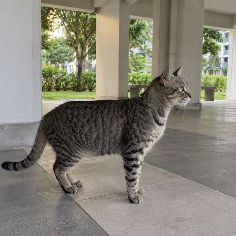
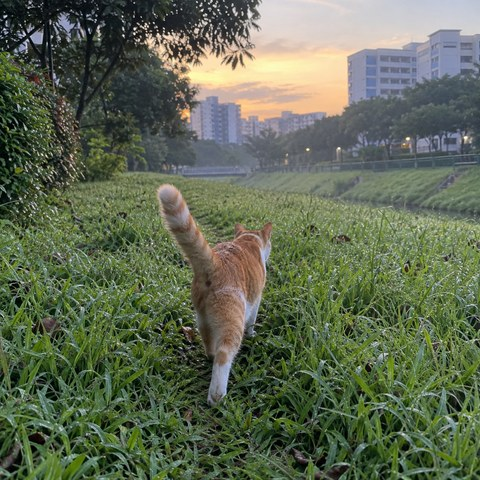
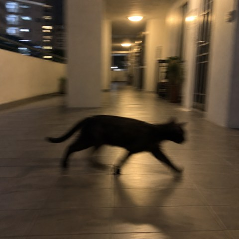
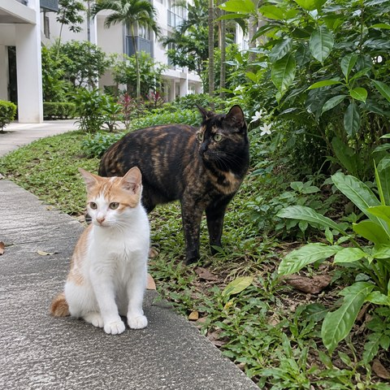
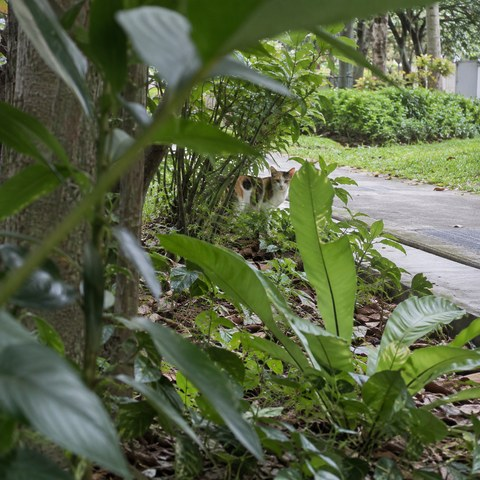
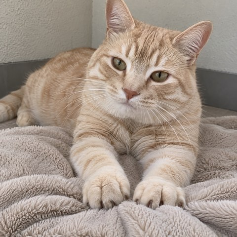
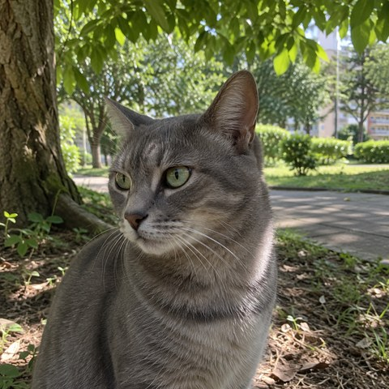
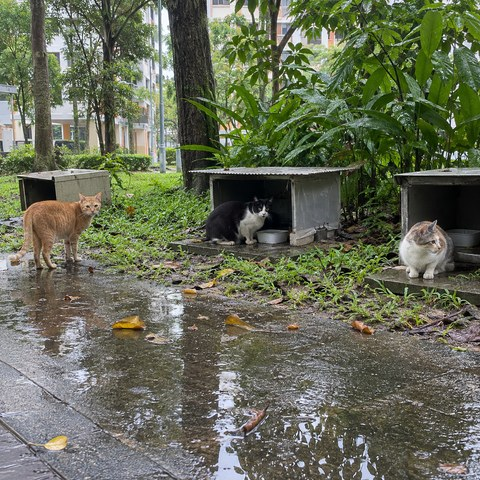

Grey-striped tabby in side profile at a generic Singapore-like HDB void deck; candid phone photo.
Synthetic test image · 2026-09-11
Ginger-white cat from behind walking through dawn grass near generic apartment greenery; candid phone photo.
Synthetic test image · 2026-09-11
Intentionally motion-blurred black cat crossing a warm evening residential corridor; low-light phone snapshot.
Synthetic test image · 2026-09-11
Distinct ginger-white and tortoiseshell cats together beside a generic residential garden; community post only.
Synthetic test image · 2026-09-11
Small distant calico partly occluded by foreground leaves beside a generic footpath; observational phone photo.
Synthetic test image · 2026-09-11
Clear cream tabby resting and kneading a plain mat; natural phone portrait.
Synthetic test image · 2026-09-11
Grey cat in three-quarter view under a shade tree in generic neighbourhood greenery; candid phone photo.
Synthetic test image · 2026-09-11
Three cats near plain shelters after rain; wide environmental phone photo; community post only.
Synthetic test image · 2026-09-11Fictional middle-aged Asian woman outdoors in generic greenery; synthetic neighbour profile portrait.
Synthetic test image · 2026-09-11Fictional older Malay man against a neutral exterior background; synthetic neighbour profile portrait.
Synthetic test image · 2026-09-11